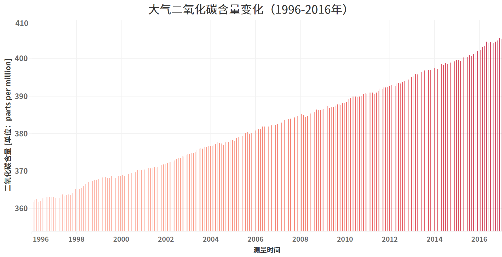
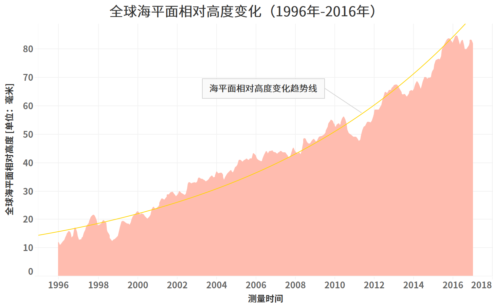

全球变暖是指在一段时间中，地球的大气和海洋因温室效应而造成温度上升的气候变化，同大气污染、过度捕捞等问题一并被认为是“公地悲剧”。
自1880年以来，全球陆地海洋平均温度已经升高了0.85摄氏度，数据截止的2016年则是有史以来最温暖的年份，并且从1998年开始，每一年都是当期历史上最温暖的年份。
2013年，政府间气候变化专门委员会（以下简称IPCC）第五次评估报告认为，“人类影响极有可能是20世纪中叶以来观测到的全球变暖现象的主要原因。”人类影响包括排放诸如二氧化碳、甲烷和一氧化二氮这样的温室气体。报告中的气候模型预测指出在21世纪，根据温室气体的排放量，全球表面温度有可能继续上升0.3-1.7°C至2.6-4.8°C。这一解释得到了全球绝大多数政府和研究机构的公认。
温室气体（Greenhouse Gas）是指大气中促成温室效应的气体成分。二氧化碳作为最重要的一种温室气体之一，从图2我们可以看到大气中二氧化碳的含量在短短20年间增加了10%以上，为过去80万年来最高。
其他还有臭氧、甲烷、一氧化二氮等人造温室气体在地球大气中的含量也明显高于历史任一时期的水平。
二氧化碳等温室气体的急剧增加主要来源于人类活动，工业革命以来人类的生产力得到了前所未有的增加的同时也带来了巨量的温室气体排放。
1990年代以来，由于发达国家的经济与工业发展增速已趋稳定，许多发展中国家开始了新一轮的工业增长，随之而来的是发展中国家在温室气体排放中的增量迅速增加。在图3中我们可以看到，排放量靠前的国家基本上可分为经济或工业发达的国家如美国、俄罗斯和日本，以及近年来经济或工业快速发展的国家如中国、印度和巴西。
以中国为例，1990至2010年其GDP平均增速高达10%以上，其温室气体的排放量也陆续超过了许多传统发达国家及美国，中国的经济总量在2010年从二十年前世界第11名跃至第2名的同时也成为了全球最大的温室气体排放国。
1.海平面上升、降水变化和亚热带地区的沙漠扩张。
2.陆地冰川、冻土和海冰将加速消融。
3.极端天气更加频繁，如热浪、干旱、洪水、雪暴、海洋酸化和因温度变化引起的大规模物种灭绝。
4.农作物减产而引发粮食危机。
5.海平面上升淹没众多沿海人口稠密地区。
6.南极及格陵兰冰川消融汇入海洋后，陆地淡水资源减少。
……
由于海洋升温导致的热膨胀效应、陆地气温升高冰川融化、格陵兰冰盖和南极冰盖融化流入海洋，随之带来海平面上升。 常见的“海洋漂浮冰川的融化会导致海平面上升”的说法是错误的。根据阿基米德原理，海洋上漂浮的冰川融化后海平面仍会保持不变。
如图4所示，自1996年以来全球海平面平均每年上升3.1毫米，20年以来已上升约8厘米。海平面上升后会淹没部分沿海低海拔地区。据维基百科资料显示，全世界有3/4的人口居住在离海岸线不足500公里的地方，这些地方的居民将会面临被海水淹没的风险。据资料显示，当海平面上升3米时，包括我国江苏省、广东省等地以及越南、法国等国的沿海地区将会被淹没，而大洋腹部多如繁星的岛国将不复存在。
前面我们提到，海平面上升的一大原因在于全球变暖使得南极冰盖和格陵兰冰盖加速消融，两大冰盖占全球总冰量的90%以上。15年间，两大冰盖正在快速消融，南极平均每年消融1270亿吨，而格陵兰冰盖的消融量则达到了惊人的每年2860亿吨。这些大量消融的冰川流入海洋不仅使海平面上升，而且意味着每年有大量的淡水资源流失，而15年以来两大冰盖流失的淡水资源超过50000亿吨，相当于1800多个三峡水库的蓄水量。
全球变暖是我们日常生活中耳熟能详的一个词，但是这个词又好像离我们很远很远，我们团队希望能够通过数据的力量把全球变暖客观的展示出来，让大家能够认识到什么是全球变暖，它会导致什么样的后果。这是一个世界性的难题，全球变暖影响的是全人类和我们赖以生存的家园，希望我们的数据能够帮助大家独立、客观、冷静的看待它。
1.吕小羽. 格陵兰冰盖接近临界点. 科学网. 2019-1-29
2.张文静. 25年，海平面上升了约8厘米. 中国科学院. 2018-9-14
3.Ice Sheets Facts. NASA. 2019.
4.Christopher Joyce. Get This: Warming Planet Can Mean More Snow. NPR. 2010-02-15.
5.Zeng, Ning; Yoon, Jinho. Expansion of the world's deserts due to vegetation-albedo feedback under global warming. Geophysical Research Letters. 2009-09-01
6.Battisti, David S.; Naylor, Rosamond L. Historical Warnings of Future Food Insecurity with Unprecedented Seasonal Heat. Science. 2009-01-09
7.Working Group I of the Intergovernmental Panel on Climate Change. Summary for Policymakers . IPCC. 2007-02-05
8.US National Research Council. Ch. 1 Introduction to Technical Chapters. Surface Temperature Reconstructions for the Last 2,000 Years. Washington, DC: National Academies Press. 2006